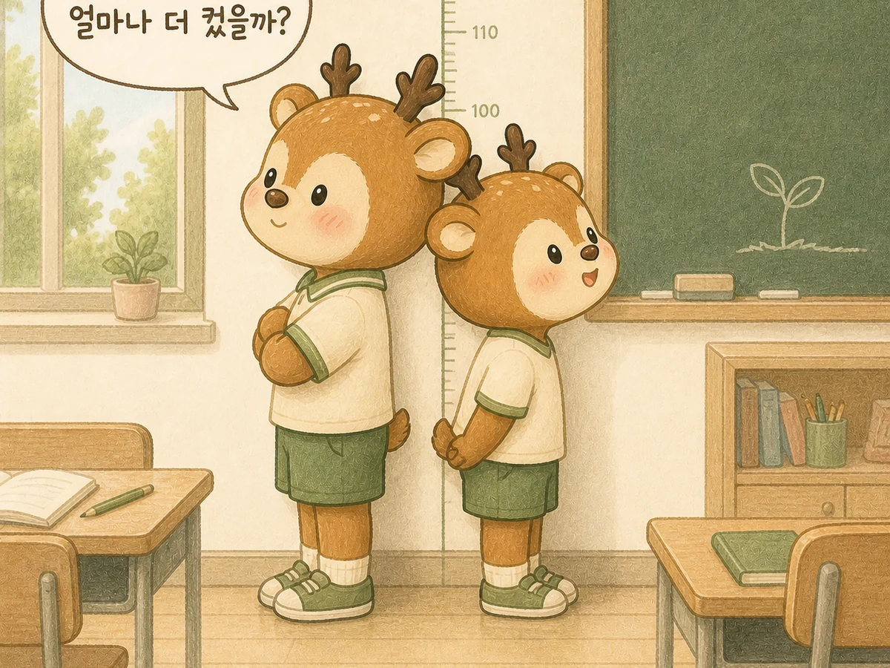
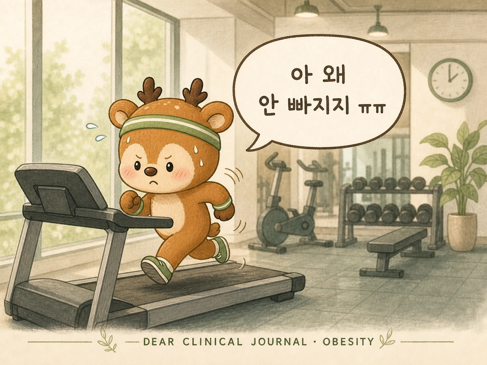
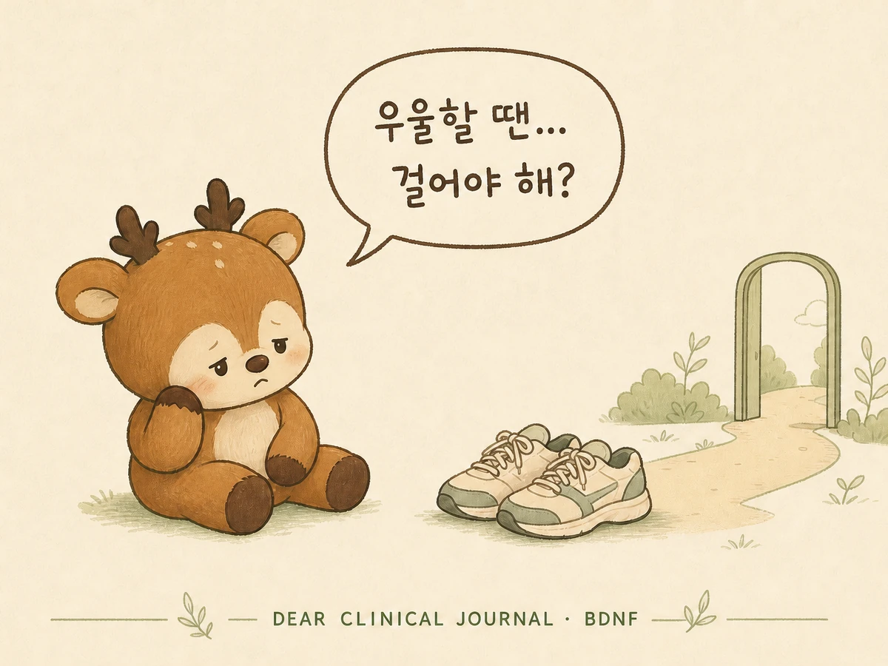
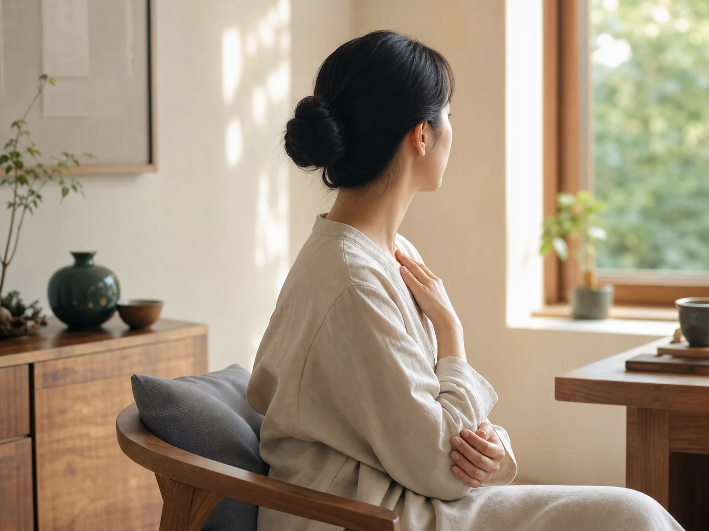

COLUMNS
몸을 이해하는 일이
나를 돌보는 시작이 되도록.
디어한의원은 증상과 생활의 연결을
쉽고 정확한 언어로 설명합니다.
진료 주제별로 읽기
한 편의 글에서 끝나지 않고, 같은 몸의 문제를 서로 다른 각도에서 이어 읽을 수 있도록 묶었습니다.
체중보다 긴 흐름을 봅니다
감정과 몸을 나누지 않습니다
검사 밖에 남은 증상을 읽습니다

강남역 한의원,키는 왜 같은 속도로크지 않을까요?
오늘의 숫자보다 아이가 지나온 성장곡선과 성장속도를 먼저 읽습니다.
칼럼 읽기강남역 한의원, 키는 왜 같은 속도로 크지 않을까요?
키는 오늘의 숫자지만, 성장은 시간이 만든 곡선입니다.

강남역 한의원 비만 진료, 간수치는 정상인데 지방간이 있다는 말
체중계에는 나오지 않는 지방의 이동을 읽어야 합니다.

강남역 한의원 우울증 진료, 잘 먹고 걸어야 하는 이유
BDNF와 뇌가 다시 움직이기 위한 조건을 살펴봅니다.

서초동 디어한의원, 기능성 소화불량 진료합니다
검사 결과만으로 설명되지 않았던 식후 포만감과 명치 통증의 구조를 다시 살펴봅니다.

강남역 한의원, 우울증 진료에 대해서
우울증은 슬픔의 다른 이름이 아닙니다

서초동 다이어트 한약 상담 전, 체중보다 먼저 살펴야 할 것
체중계는 몸이 얼마나 무거워졌는지는 알려주지만, 왜 무거워졌는지까지 설명해 주지는 않습니다.

서초동 다이어트 한의원 디어한의원
체중 숫자 하나보다 생활과 몸 상태를 함께 살펴야 하는 이유를 안내합니다.
검색 결과가 없습니다.
다른 증상이나 생활의 변화를 입력해 보세요.